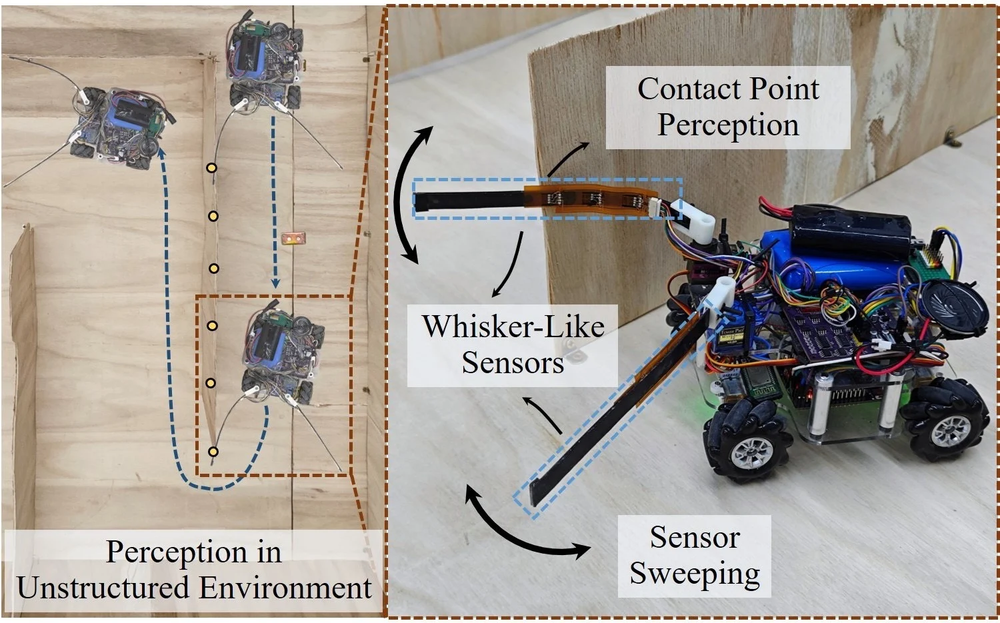
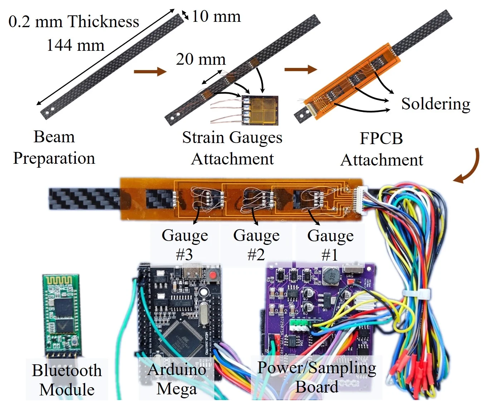
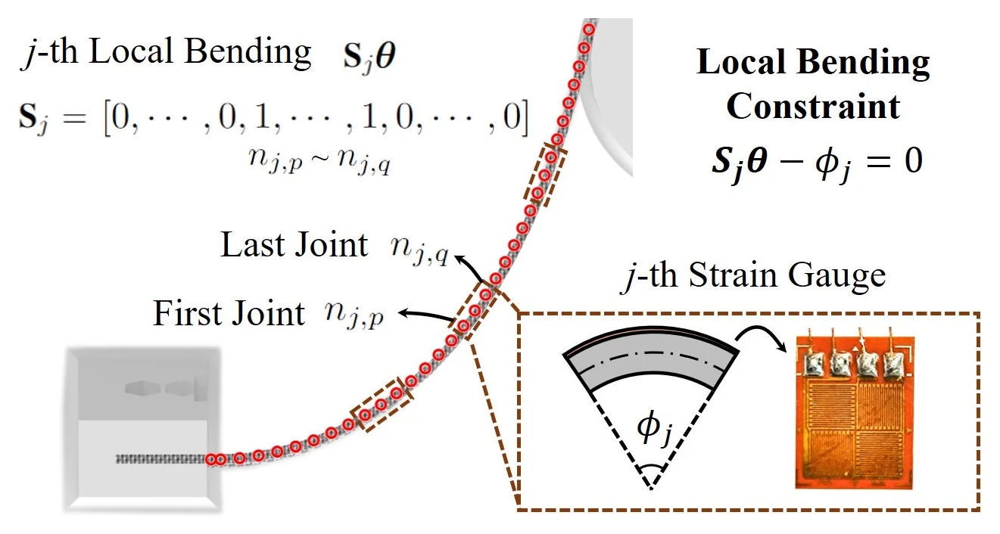
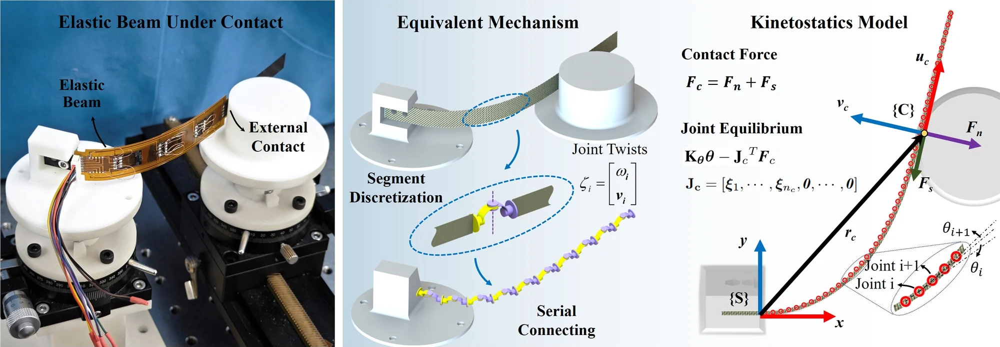
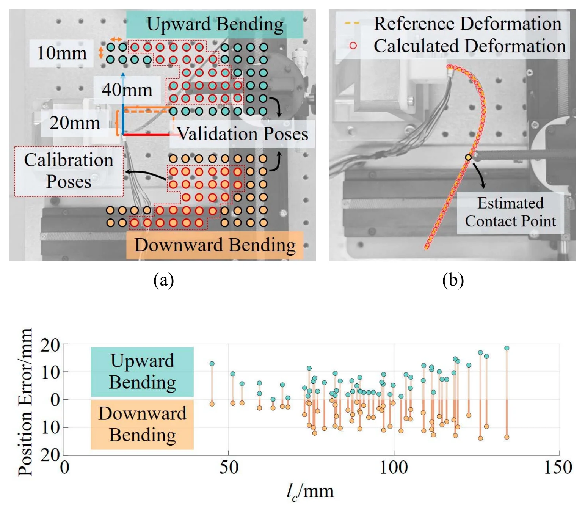
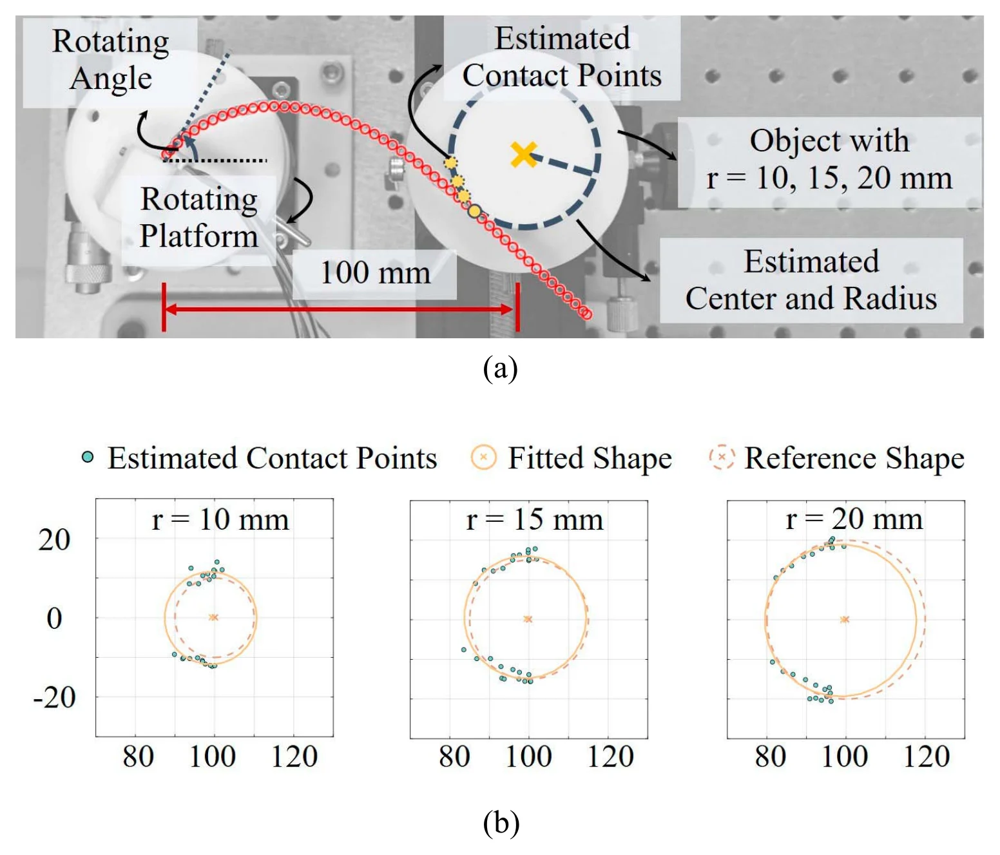
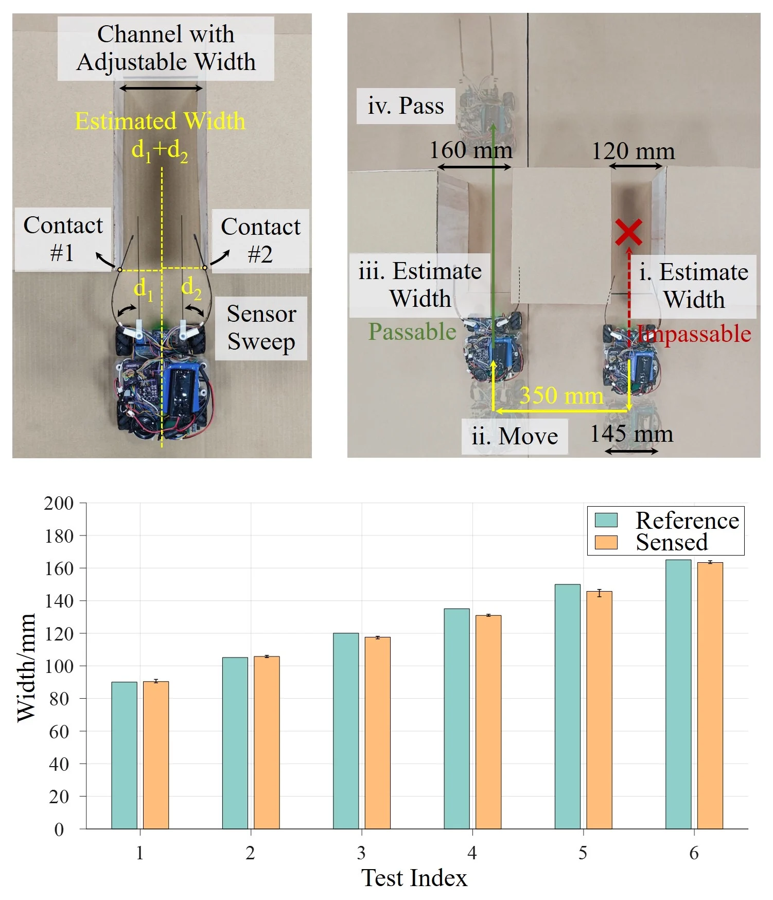
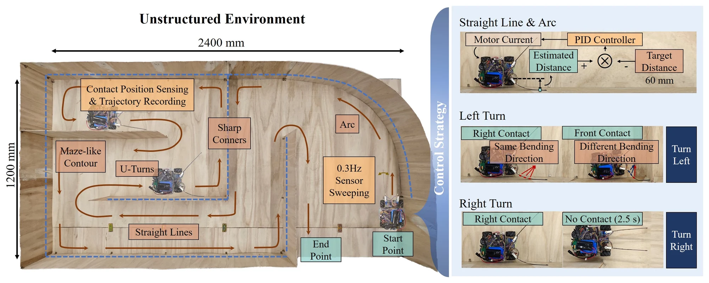
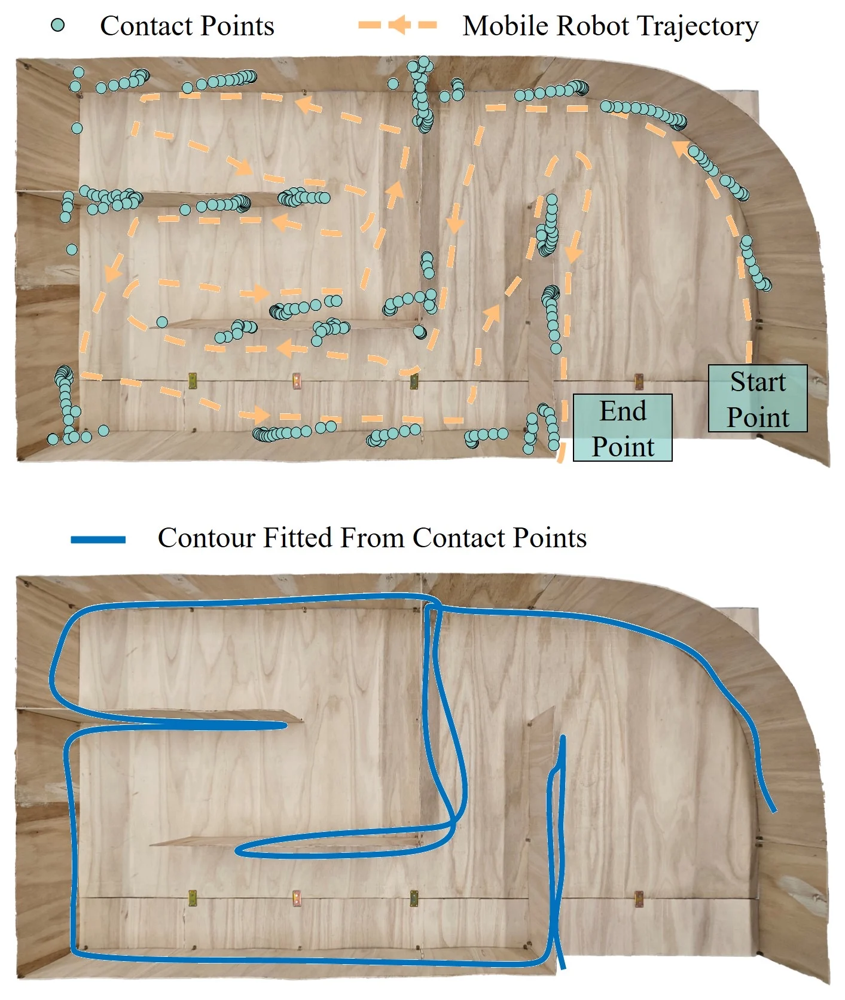
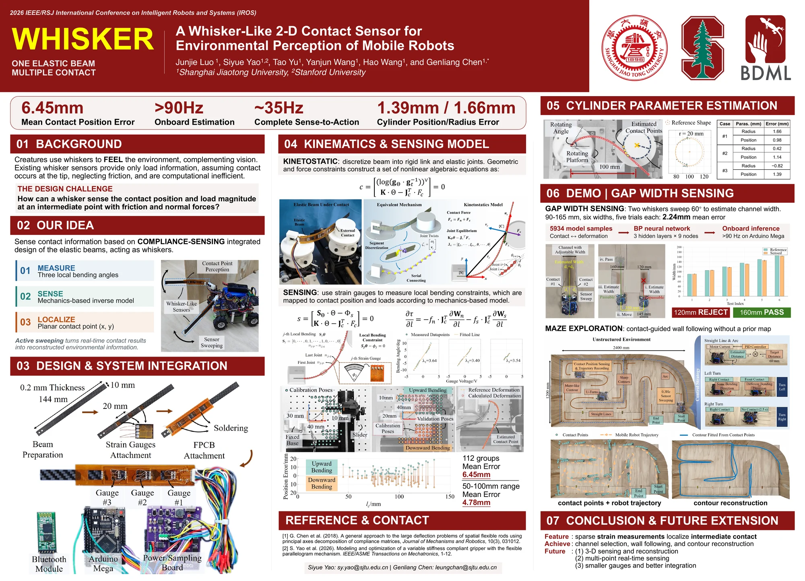

The idea
One elastic beam, three strain gauges:
a whisker that knows where it was touched.
A thin carbon-fiber beam carries three strain gauges that read how it bends at three points. From those readings, a mechanics model works out where along the beam it was touched, with friction and large bending included.
Two of these whiskers, swept by servos on a small mobile robot, let it judge whether a channel is wide enough to pass, follow the walls of an unknown maze, and reconstruct those walls from the contact points alone.
01 / Why whiskers
Touch anywhere
along the whisker.
Why locate a touch anywhere along a whisker, not only at its tip?
Rodents and seals use their whiskers to detect obstacles and find their way when other senses are limited. Artificial whiskers aim to give robots the same sense in unknown places, but many report only a load, assume the contact is at the tip, ignore friction, or compute too slowly for real-time use. Those that locate a touch along the shaft need bulky force/torque sensors, or models that hold only without friction.
This whisker reads how its beam bends at three points along its length. A model of the beam turns the three readings into the position of a contact along the whisker, not just at its tip, with friction and large bending. Mounted on servos, two whiskers sweep to feel the robot's surroundings.

02 / Design
A beam that measures
its own bending.
How can three strain gauges locate a touch?
The whisker is a carbon-fiber plate 10 mm wide, 0.2 mm thick and 144 mm long, flexible enough to bend far under contact. Three full-bridge strain gauges are glued along it 20 mm apart, and each reads the bending of its own section. A flexible printed circuit board, glued onto the beam and soldered to the gauges' leads, powers them and carries their signals to the sampling board.
An AD7895 converter digitizes the voltages, which go over Bluetooth to a laptop; with six gauges connected, the system samples at more than 100 Hz. A 7.4 V lithium battery powers it, so it is portable and wireless. The prototype went through more than 10,000 loading cycles with minimal fatigue and plastic deformation, and low hysteresis.
Measure
Each of the three gauges reads the local bending angle of its section
Sense
A mechanics model of the beam is solved backward from the three angles
Localize
Out comes the contact point in the plane, (x, y)

How a gauge reads the bending

03 / Sensing model
Sensing
model.
Can a model work backward from bending to contact, even with friction?
The model divides the beam into many short rigid links joined by elastic joints. The whisker moves in a plane, and it is far thinner than it is wide, so each joint only bends: shear and compression are negligible next to bending. For a given contact, the joints settle where their spring torques balance the contact force, which has a normal part and, because the model allows static friction, a friction part along the beam.
Run in reverse, the three readings become constraints: the solver looks for the contact location and the normal and friction forces that bend the three sections by exactly the measured amounts. That makes three unknowns besides the beam's shape, so three gauges are the minimum. If friction is neglected, two unknowns remain, and the three readings are fitted by least squares.

To calibrate, a freely rotating pulley pressed the whisker at 54 positions on both sides, so the contact could be treated as frictionless. A linear fit gave each gauge's bending per volt, and the model then placed the 54 contacts with a mean residual of 3.56 mm.
To validate, the pulley was bolted so it could not turn, and friction acted. Over 112 poses in both bending directions, covering more than 60% of the whisker's length, the mean error was 6.45 mm, 4.45% of the beam's length. Between 50 and 100 mm from the base, a range similar to the calibration's, it was 4.78 mm. In one case shown in Fig. 7, the tip was pushed backward and a gauge section bent by more than 10°.

04 / Active sensing
Feeling shapes
by sweeping.
What can a sweeping whisker tell about an object?
With its base on a platform that rotates in the plane, the whisker swept past a cylinder whose center was 100 mm from the base. Rotating, it touched the cylinder at a series of points, recorded every 5° of rotation, and a least-squares circle through the points gave the cylinder's radius and center.
For cylinders of 10, 15 and 20 mm radius, the radius was off by 0.97 mm on average, and the center by 1.17 mm.

| Cylinder · parameter | Reference (mm) | Identified (mm) | Error (mm) |
|---|---|---|---|
| #1 · radius | 10.00 | 11.66 | 1.66 |
| #1 · center | (100.00, 0.00) | (99.02, −0.10) | 0.98 |
| #2 · radius | 15.00 | 15.42 | 0.42 |
| #2 · center | (100.00, 0.00) | (99.05, 0.63) | 1.14 |
| #3 · radius | 20.00 | 19.18 | −0.82 |
| #3 · center | (100.00, 0.00) | (98.63, −0.19) | 1.39 |
05 / Channel width
Will it
fit?
Can a robot decide by touch whether a gap is wide enough?
Rats can judge the width of a narrow opening with their whiskers. Here a four-wheeled robot carries two whiskers on servos. Placed with its center line parallel to a channel, it sweeps both whiskers from straight ahead to 60° outward, one sweep every 8 s, and the points where they touch the two sides give the channel's width. The slow sweep keeps the contacts quasi-static, so the model still holds.
Over six widths from 90 to 165 mm, five trials each, the mean error was 2.24 mm, and the deviations of all trials stayed within 4.50 mm.
To decide whether it can pass, the robot compares the sensed width with its own size. Facing two parallel channels, 120 and 160 mm wide, it finds the narrower one impassable, shifts sideways to the wider one, finds it wide enough and drives through.

06 / Maze
Mapping a maze
by touch.
Can touch alone guide a robot through an unknown maze, and draw it?
The robot's microcontroller, an Arduino Mega 2560, has little computing power, so it does not solve the model's equations. Instead, the model generated 5934 sets of contact positions and the whisker deformations that go with them, and a small neural network with three hidden layers of nine nodes was trained on them. Run as matrix operations, it estimates a contact position in 11 ms, faster than 90 Hz, with accuracy similar to the full model. With 10 ms for sampling at 100 Hz and about 8 ms of motor latency, the whole loop from sensing to action runs at about 35 Hz.
In a 2400 × 1200 mm field of straight walls, arcs and a maze-like section with sharp corners, the robot followed the right-hand wall with no prior map. Both whiskers swept 60° at 0.3 Hz. Along straight walls and arcs, a PID controller set the wheel speeds to keep the robot's distance from the wall, sensed by the right whisker, near 60 mm. A wall ahead shows up because at least one gauge bends in a different direction from the others, and the robot turns left; when the right whisker has had no contact for 2.5 s, the wall has turned away, and the robot turns right until it touches again.

Each contact point was logged with the wheel encoders' speed and the IMU's heading and sent over Bluetooth to a computer, which drew the robot's trajectory and the contact points in real time. Over several runs, the robot followed straight and curved walls, made 90° and 180° turns through the maze, and reached the end, regaining contact after losing it. Splines fitted to the contact points reconstruct the walls: the fitted contour generally matches the real one, with errors from the encoders, the IMU and the open-loop servo angles.

Questions & answers
Common questions.
Why three strain gauges?
Besides the beam's shape, the model has three unknowns: where along the beam the contact is, and the sizes of its normal and friction forces. Each gauge adds one equation, so three gauges are the minimum. Using only the minimum makes the estimate sensitive to noise in any one gauge, so the authors suggest adding gauges with better signal conditioning.
How can an Arduino run the model?
It runs a network trained on the model instead. The model generated 5934 sets of contact positions and the whisker deformations they cause, and a network with three hidden layers of nine nodes was trained on them. As matrix operations, it takes 11 ms per estimate on an Arduino Mega 2560, with accuracy similar to solving the full model.
What limits the accuracy?
Noise in the gauges and the sampling circuit, which matters more with only three gauges; tolerances in the 3-D-printed mount and contact objects, which can bend the beam out of its plane and add shear; and contacts that land on a gauge's solder joints or wires instead of the beam's surface. The authors suggest more gauges, precision-machined parts, and strain-sensitive grids deposited directly on the flexible circuit board.
Does it sense 3-D contact?
No. The whisker and its model work in one plane, for one contact at a time. Out-of-plane and multi-point contact, smaller strain gauges and new structural designs are the authors' next steps.
Paper & authors
Contact sensing
from beam mechanics.
A Whisker-Like 2-D Contact Sensor for Environmental Perception of Mobile Robots
Junjie Luo, Siyue Yao, Tao Yu, Yanjun Wang, Hao Wang, and Genliang Chen.
IEEE Transactions on Industrial Electronics, vol. 73, no. 2, pp. 2544–2553, February 2026. Presented at IROS 2026, Pittsburgh.
Citation / BibTeX
@article{luo2026whisker,
title = {A Whisker-Like 2-D Contact Sensor for Environmental Perception of Mobile Robots},
author = {Luo, Junjie and Yao, Siyue and Yu, Tao and Wang, Yanjun and Wang, Hao and Chen, Genliang},
journal = {IEEE Transactions on Industrial Electronics},
volume = {73},
number = {2},
pages = {2544--2553},
year = {2026},
publisher = {Institute of Electrical and Electronics Engineers (IEEE)},
doi = {10.1109/TIE.2025.3598187}
}Full affiliations
- META Robotics Institute, Shanghai Jiao Tong University, Shanghai, China
- Shanghai Key Laboratory of Digital Manufacture for Thin-Walled Structures, Shanghai Jiao Tong University, Shanghai, China
- Institute of Marine Equipment, Shanghai Jiao Tong University, Shanghai, China
- State Key Laboratory of Mechanical System and Vibration, Shanghai Jiao Tong University, Shanghai, China
- Shanghai Key Laboratory of Intelligent Robotics, Shanghai Jiao Tong University, Shanghai, China
* Corresponding author: Genliang Chen

The complete video
Watch both demonstrations.
The robot estimates the widths of two channels and passes through the wider one, in real time; then it follows the walls of the maze, at 5× speed for most of the run, and the trajectory, the contact points and the reconstructed contour are shown.